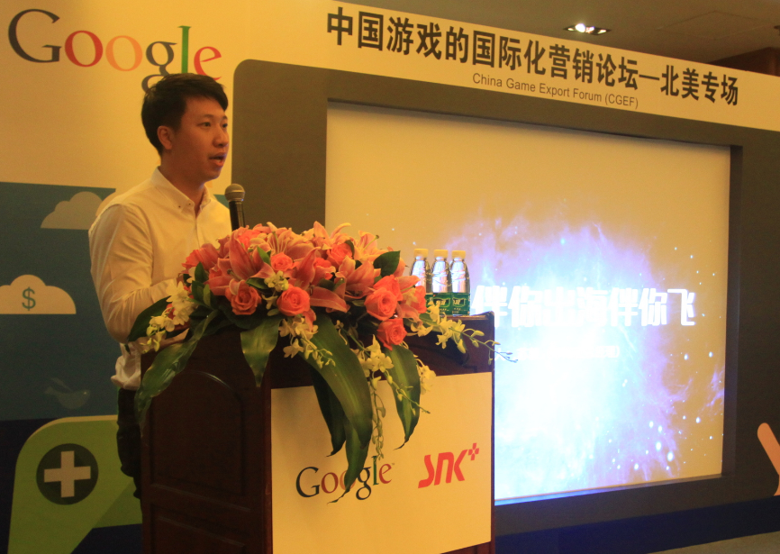
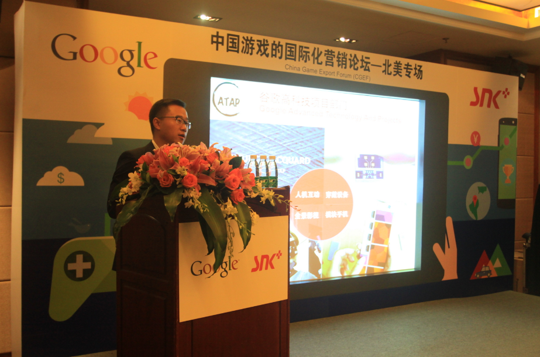
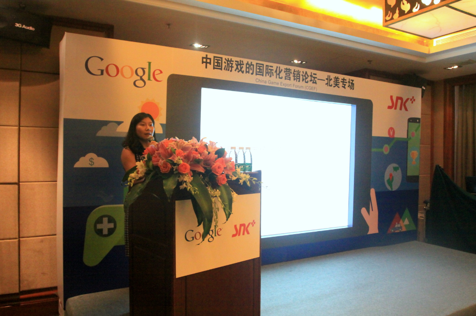

SNK与Google联手 助力中国游戏开拓北美市场
发布时间:2015-11-26 12:28:14
2015年6月26日，思恩客（以下简称SNK）与Google在深圳凯宾斯基酒店联合举办了第二届中国游戏国际化营销论坛China Game Export Forum (CGEF)——北美专场。谷歌媒体渠道业务副总经理张骏和相关业务负责人以及SNK北美分公司总经理Vickie Chen陈燕娟就如何在庞大的北美市场成功营销推广产品带来了全方位解读。
战争休闲类受北美玩家青睐 策略游戏成吸金王者
据相关数据显示，自2011年至2015年，已经有几十家中国游戏厂商先后进军北美市场。其中，在北美畅销榜单中200-400名区间的中国厂商数量最多。SNK华南区域总经理苏毅（Ted Su）表示，在市场潜力如此巨大的北美市场中，战争模拟类游戏最受亲睐，其次是博彩和休闲类游戏，中国游戏厂商如何迎合美国玩家产品需求，也将至关重要。
SNK华南区域总经理苏毅（Ted Su）
此次论坛上，Google就目前的北美市场做了全面的解析，并对新的发展趋势下手游推广做出了建议。2014年，北美依旧是最大的在线游戏市场，人口为3.58亿，网络用户为3.06亿，其中游戏玩家1.95亿人，手游玩家1.33亿，愿意付费的手游玩家为5100万人。在北美市场收入排行榜排名前三的手游类型分别为策略类、角色扮演类、休闲类，而亚洲游戏在北美游戏Top50中占位10名以上。
Google认为市场发展三大趋势分别为跨屏，多屏时代到来；视频，越来越多的用户在网上收看游戏视频；品牌+效果，建立自己的品牌，或与现有品牌合作。基于这三大趋势，Google的移动APP推广方案进行了优化，注重多平台推广以及YouTube等渠道的广告投放。
谷歌中国渠道管理部副总经理张骏（Steven Zhang）
SNK助力中国游戏在北美解决“水土不服”问题
进军北美市场，中国游戏厂商需要一个既懂中国产品又懂北美市场的营销“先锋队”。目前，SNK北美分部已经成功与游族的《女神联盟》、以及日本mixi的Monster Strike完成了多场市场推广工作，为中国游戏进军北美奠定营销基础。
在助力中国游戏产品在海外打好营销战役之外，SNK还有助于中国游戏在产品之初就做好本土化工作。中西方最大的差异莫过于价值观念的差异，因而在游戏内的经济系统设计时，不能一味的遵循国人的套路，而是入乡随俗。SNK凭借数十年在中国本土的产品营销经验，结合针对北美市场的大数据分析能力，能为中国游戏厂商提出适合北美本土化的游戏产品建议。
除此之外，SNK北美分公司总经理陈燕娟 （Vickie Chen）表示，SNK在北美拥有丰富的媒体、网络红人和明星资源，并能根据测试数据分析美国冲榜可信性和必要策略，提供ASO服务，优化App Store和Google Play展示等各类定制服务。
SNK北美分公司总经理陈燕娟 （Vickie Chen）
相信此次论坛峰会不仅为游戏厂商拓宽了海外营销思路，同时也有助于促使游戏厂商将目光回归游戏产品本身，向海外输出更多的国产精品。